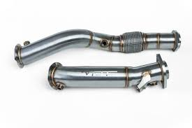

BMW M4 G82 CSL
Track-Ready Luxury and Power

Specifications
- Engine: 3.0L Inline-6 Twin-Turbo
- Power: 550 hp
- Torque: 650 Nm
- Transmission: 8-Speed Automatic
- Top Speed: 307 km/h (191 mph)
- 0-100 km/h: 3.7 seconds
- Weight: 1,625 kg
About the BMW M4 G82 CSL
The BMW M4 G82 CSL is the pinnacle of performance coupes, crafted for driving enthusiasts seeking unmatched excellence. Its lightweight construction, aerodynamic refinements, and upgraded 3.0L twin-turbo inline-six engine deliver exceptional power and agility. With 543 hp, a 0–100 km/h time of 3.7 seconds, and track-focused tuning, the G82 CSL excels on both road and track. This limited-production model features carbon-fiber elements, a bold design with a distinctive grille, and advanced technology to ensure precision handling. The G82 CSL represents BMW's unwavering dedication to innovation and driving exhilaration.
Best Modifications for the BMW M4 G82 CSL
Budget: Up to 2,000 BGN
- Air Intake System: MST Carbon Fiber Intake
- Exhaust Tips: Remus Carbon Tips
- Software Tune: Bootmod3 Stage 1
Budget: 2,000 - 5,000 BGN
-  Downpipes: VRSF High-Flow Downpipes
- Suspension: KW Clubsport Coilovers
- Intercooler: Wagner Tuning Intercooler
Budget: 5,000+ BGN
- Turbo Upgrade: Gintani Stage 2 Turbos
-
 Exhaust System: Akrapovič Evolution Line
Exhaust System: Akrapovič Evolution Line
- ECU Tune: Evolve Stage 3
Performance Gains from Modifications
| Modification | Horsepower Gain | Torque Gain | Other Gains |
|---|---|---|---|
| Air Intake System (MST) | +10 hp | +15 Nm | - |
| Exhaust Tips (Remus) | +5 hp | +10 Nm | - |
| Software Tune (Bootmod3 Stage 1) | +50 hp | +70 Nm | - |
| Downpipes (VRSF) | +25 hp | +35 Nm | - |
| Suspension (KW Clubsport) | - | - | Improved handling |
| Intercooler (Wagner) | +20 hp | +25 Nm | - |
| Turbo Upgrade (Gintani Stage 2) | +120 hp | +150 Nm | - |
| Exhaust System (Akrapovič) | +25 hp | +30 Nm | - |
| ECU Tune (Evolve Stage 3) | +200 hp | +250 Nm | - |
Image Gallery